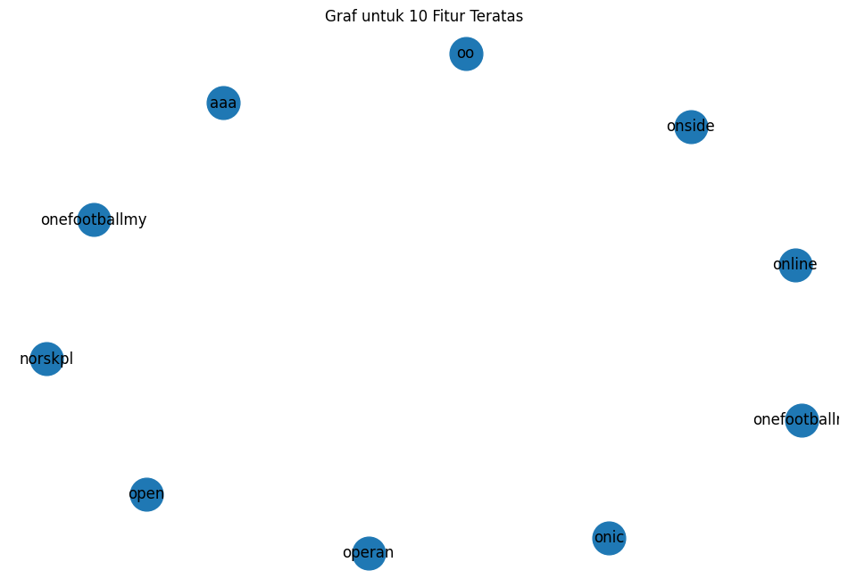
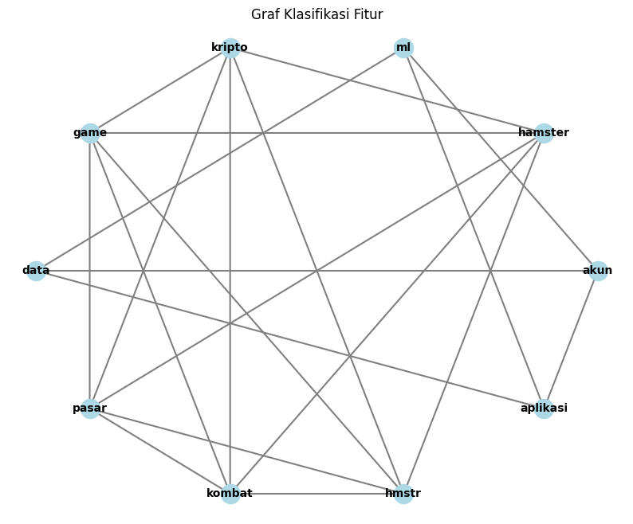

Tugas 4 - TF-IDF,Cosine Similarity,Closeness Centrality#
Nama : Adz Dzikry Pradana Putra#
Nim : 210411100093#
1.Data Hasil Preprocessing#
from google.colab import drive
drive.mount('/content/drive')
import pickle
import pandas as pd
Mounted at /content/drive
df = pd.read_csv("/content/drive/My Drive/PPW-A/report/Tugas-PPW/hasil_preprocesing.csv")
df.head()
| judul | isi | tanggal | kategori | Hasil cleansing | Hasil case_folding | tokenize | Hasil stopword | |
|---|---|---|---|---|---|---|---|---|
| 0 | Game Battle of Guardian Gelar Eksibisi di PON ... | Jakarta - Pada ajang Pekan Olahraga Nasional (... | Minggu, 08 Sep 2024 19:03 WIB | Games | Jakarta Pada ajang Pekan Olahraga Nasional PO... | jakarta pada ajang pekan olahraga nasional po... | ['jakarta', 'pada', 'ajang', 'pekan', 'olahrag... | jakarta ajang pekan olahraga nasional pon aceh... |
| 1 | Setelah Viral, Game Hamster Kombat akan Jadi T... | Jakarta - Bitget, exchange mata uang kripto, m... | Minggu, 08 Sep 2024 15:03 WIB | Games | Jakarta Bitget exchange mata uang kripto meng... | jakarta bitget exchange mata uang kripto meng... | ['jakarta', 'bitget', 'exchange', 'mata', 'uan... | jakarta bitget exchange mata uang kripto mengu... |
| 2 | 3 Cara Log Out Akun ML 2024 dan Beralih Akun Baru | Jakarta - Mobile Legends (ML) adalah salah sat... | Sabtu, 07 Sep 2024 19:41 WIB | Games | Jakarta Mobile Legends ML adalah salah satu g... | jakarta mobile legends ml adalah salah satu g... | ['jakarta', 'mobile', 'legends', 'ml', 'adalah... | jakarta mobile legends ml salah game online po... |
| 3 | Ada Apa dengan Indostars di FFWS SEA 2024 Fall... | Jakarta - Free Fire World Series (FFWS) Southe... | Sabtu, 07 Sep 2024 17:18 WIB | Games | Jakarta Free Fire World Series FFWS Southeeas... | jakarta free fire world series ffws southeeas... | ['jakarta', 'free', 'fire', 'world', 'series',... | jakarta free fire world series ffws southeeast... |
| 4 | NBA 2K25 Rilis di PS4, PS5, Xbox, dan PC, Segi... | Jakarta - 2K selaku penerbit dan Visual Concep... | Sabtu, 07 Sep 2024 16:14 WIB | Games | Jakarta K selaku penerbit dan Visual Concept ... | jakarta k selaku penerbit dan visual concept ... | ['jakarta', 'k', 'selaku', 'penerbit', 'dan', ... | jakarta k penerbit visual concept pengembang g... |
TF-IDF Weight#
from sklearn.preprocessing import LabelEncoder
# Transformasi data kategorik
label_encoder = LabelEncoder()
df.loc[:, 'kategori_encoded'] = label_encoder.fit_transform(df['kategori'])
# Menampilkan nilai sebelum dan sesudah konversi
print("\nNilai sebelum dan sesudah konversi:")
print(dict(zip(label_encoder.classes_, label_encoder.transform(label_encoder.classes_))))
print("\nDataFrame setelah Label Encoding:")
print(df)
Nilai sebelum dan sesudah konversi:
{'Games': 0, 'Sepak Bola': 1}
DataFrame setelah Label Encoding:
judul \
0 Game Battle of Guardian Gelar Eksibisi di PON ...
1 Setelah Viral, Game Hamster Kombat akan Jadi T...
2 3 Cara Log Out Akun ML 2024 dan Beralih Akun Baru
3 Ada Apa dengan Indostars di FFWS SEA 2024 Fall...
4 NBA 2K25 Rilis di PS4, PS5, Xbox, dan PC, Segi...
.. ...
95 Dikejutkan Indonesia, Arab Saudi Nggak Istirah...
96 Klopp Kritik Keras MU Gara-gara Lepas Jadon Sa...
97 Mees Hilgers Tak Sabar Bela Timnas Indonesia
98 Militao Cedera, Sisa Berapa Bek Real Madrid?
99 Naturalisasi Mees Hilgers & Eliano Reijnders B...
isi \
0 Jakarta - Pada ajang Pekan Olahraga Nasional (...
1 Jakarta - Bitget, exchange mata uang kripto, m...
2 Jakarta - Mobile Legends (ML) adalah salah sat...
3 Jakarta - Free Fire World Series (FFWS) Southe...
4 Jakarta - 2K selaku penerbit dan Visual Concep...
.. ...
95 Jakarta - Arab Saudi dikejutkan oleh Timnas In...
96 Dortmund - Juergen Klopp mengomentari situasi ...
97 Jakarta - Mees Hilgers akan menjalani proses n...
98 Jakarta - Kabar buruk buat Real Madrid, beknya...
99 Jakarta - Timnas Indonesia akan segera mendapa...
tanggal kategori \
0 Minggu, 08 Sep 2024 19:03 WIB Games
1 Minggu, 08 Sep 2024 15:03 WIB Games
2 Sabtu, 07 Sep 2024 19:41 WIB Games
3 Sabtu, 07 Sep 2024 17:18 WIB Games
4 Sabtu, 07 Sep 2024 16:14 WIB Games
.. ... ...
95 Sabtu, 07 Sep 2024 18:00 WIB Sepak Bola
96 Sabtu, 07 Sep 2024 17:30 WIB Sepak Bola
97 Sabtu, 07 Sep 2024 17:00 WIB Sepak Bola
98 Sabtu, 07 Sep 2024 16:30 WIB Sepak Bola
99 Sabtu, 07 Sep 2024 16:00 WIB Sepak Bola
Hasil cleansing \
0 Jakarta Pada ajang Pekan Olahraga Nasional PO...
1 Jakarta Bitget exchange mata uang kripto meng...
2 Jakarta Mobile Legends ML adalah salah satu g...
3 Jakarta Free Fire World Series FFWS Southeeas...
4 Jakarta K selaku penerbit dan Visual Concept ...
.. ...
95 Jakarta Arab Saudi dikejutkan oleh Timnas Ind...
96 Dortmund Juergen Klopp mengomentari situasi J...
97 Jakarta Mees Hilgers akan menjalani proses na...
98 Jakarta Kabar buruk buat Real Madrid beknya E...
99 Jakarta Timnas Indonesia akan segera mendapat...
Hasil case_folding \
0 jakarta pada ajang pekan olahraga nasional po...
1 jakarta bitget exchange mata uang kripto meng...
2 jakarta mobile legends ml adalah salah satu g...
3 jakarta free fire world series ffws southeeas...
4 jakarta k selaku penerbit dan visual concept ...
.. ...
95 jakarta arab saudi dikejutkan oleh timnas ind...
96 dortmund juergen klopp mengomentari situasi j...
97 jakarta mees hilgers akan menjalani proses na...
98 jakarta kabar buruk buat real madrid beknya e...
99 jakarta timnas indonesia akan segera mendapat...
tokenize \
0 ['jakarta', 'pada', 'ajang', 'pekan', 'olahrag...
1 ['jakarta', 'bitget', 'exchange', 'mata', 'uan...
2 ['jakarta', 'mobile', 'legends', 'ml', 'adalah...
3 ['jakarta', 'free', 'fire', 'world', 'series',...
4 ['jakarta', 'k', 'selaku', 'penerbit', 'dan', ...
.. ...
95 ['jakarta', 'arab', 'saudi', 'dikejutkan', 'ol...
96 ['dortmund', 'juergen', 'klopp', 'mengomentari...
97 ['jakarta', 'mees', 'hilgers', 'akan', 'menjal...
98 ['jakarta', 'kabar', 'buruk', 'buat', 'real', ...
99 ['jakarta', 'timnas', 'indonesia', 'akan', 'se...
Hasil stopword kategori_encoded
0 jakarta ajang pekan olahraga nasional pon aceh... 0
1 jakarta bitget exchange mata uang kripto mengu... 0
2 jakarta mobile legends ml salah game online po... 0
3 jakarta free fire world series ffws southeeast... 0
4 jakarta k penerbit visual concept pengembang g... 0
.. ... ...
95 jakarta arab saudi dikejutkan timnas indonesia... 1
96 dortmund juergen klopp mengomentari situasi ja... 1
97 jakarta mees hilgers menjalani proses naturali... 1
98 jakarta kabar buruk real madrid beknya eder mi... 1
99 jakarta timnas indonesia pemain naturalisasi m... 1
[100 rows x 9 columns]
Pelabelan menggunakan LabelEncoder#
from sklearn.model_selection import train_test_split
# Split data
x = df['Hasil stopword']
y = df['kategori_encoded']
print(x)
print(y)
x_train, x_test, y_train, y_test = train_test_split(x, y, test_size=0.2, random_state=12)
print("="*50)
print("Jumlah data latih:", len(x_train))
print("Jumlah data uji:", len(x_test))
0 jakarta ajang pekan olahraga nasional pon aceh...
1 jakarta bitget exchange mata uang kripto mengu...
2 jakarta mobile legends ml salah game online po...
3 jakarta free fire world series ffws southeeast...
4 jakarta k penerbit visual concept pengembang g...
...
95 jakarta arab saudi dikejutkan timnas indonesia...
96 dortmund juergen klopp mengomentari situasi ja...
97 jakarta mees hilgers menjalani proses naturali...
98 jakarta kabar buruk real madrid beknya eder mi...
99 jakarta timnas indonesia pemain naturalisasi m...
Name: Hasil stopword, Length: 100, dtype: object
0 0
1 0
2 0
3 0
4 0
..
95 1
96 1
97 1
98 1
99 1
Name: kategori_encoded, Length: 100, dtype: int64
==================================================
Jumlah data latih: 80
Jumlah data uji: 20
import numpy as np
import pandas as pd
import networkx as nx
from sklearn.feature_extraction.text import TfidfVectorizer
# Inisialisasi TF-IDF Vectorizer
tfidf = TfidfVectorizer()
# Fit dan transform pada data training
x_train_tfidf = tfidf.fit_transform(x_train)
# Mendapatkan nama fitur dari TF-IDF
feature_names = tfidf.get_feature_names_out()
# Konversi TF-IDF hasil training ke DataFrame
df_train_tfidf = pd.DataFrame(x_train_tfidf.toarray(), columns=feature_names)
df_train_tfidf
| aaa | aao | aarav | abdullah | abg | abnormal | abramovich | absen | abyssal | ac | ... | zirkzee | zola | zombie | zombies | zona | zone | zones | zora | zs | zwolle | |
|---|---|---|---|---|---|---|---|---|---|---|---|---|---|---|---|---|---|---|---|---|---|
| 0 | 0.0 | 0.0 | 0.0 | 0.0 | 0.0 | 0.0 | 0.0 | 0.0 | 0.0 | 0.0 | ... | 0.0 | 0.0 | 0.0 | 0.0 | 0.000000 | 0.0 | 0.0 | 0.0 | 0.0 | 0.0 |
| 1 | 0.0 | 0.0 | 0.0 | 0.0 | 0.0 | 0.0 | 0.0 | 0.0 | 0.0 | 0.0 | ... | 0.0 | 0.0 | 0.0 | 0.0 | 0.000000 | 0.0 | 0.0 | 0.0 | 0.0 | 0.0 |
| 2 | 0.0 | 0.0 | 0.0 | 0.0 | 0.0 | 0.0 | 0.0 | 0.0 | 0.0 | 0.0 | ... | 0.0 | 0.0 | 0.0 | 0.0 | 0.000000 | 0.0 | 0.0 | 0.0 | 0.0 | 0.0 |
| 3 | 0.0 | 0.0 | 0.0 | 0.0 | 0.0 | 0.0 | 0.0 | 0.0 | 0.0 | 0.0 | ... | 0.0 | 0.0 | 0.0 | 0.0 | 0.141742 | 0.0 | 0.0 | 0.0 | 0.0 | 0.0 |
| 4 | 0.0 | 0.0 | 0.0 | 0.0 | 0.0 | 0.0 | 0.0 | 0.0 | 0.0 | 0.0 | ... | 0.0 | 0.0 | 0.0 | 0.0 | 0.000000 | 0.0 | 0.0 | 0.0 | 0.0 | 0.0 |
| ... | ... | ... | ... | ... | ... | ... | ... | ... | ... | ... | ... | ... | ... | ... | ... | ... | ... | ... | ... | ... | ... |
| 75 | 0.0 | 0.0 | 0.0 | 0.0 | 0.0 | 0.0 | 0.0 | 0.0 | 0.0 | 0.0 | ... | 0.0 | 0.0 | 0.0 | 0.0 | 0.000000 | 0.0 | 0.0 | 0.0 | 0.0 | 0.0 |
| 76 | 0.0 | 0.0 | 0.0 | 0.0 | 0.0 | 0.0 | 0.0 | 0.0 | 0.0 | 0.0 | ... | 0.0 | 0.0 | 0.0 | 0.0 | 0.000000 | 0.0 | 0.0 | 0.0 | 0.0 | 0.0 |
| 77 | 0.0 | 0.0 | 0.0 | 0.0 | 0.0 | 0.0 | 0.0 | 0.0 | 0.0 | 0.0 | ... | 0.0 | 0.0 | 0.0 | 0.0 | 0.000000 | 0.0 | 0.0 | 0.0 | 0.0 | 0.0 |
| 78 | 0.0 | 0.0 | 0.0 | 0.0 | 0.0 | 0.0 | 0.0 | 0.0 | 0.0 | 0.0 | ... | 0.0 | 0.0 | 0.0 | 0.0 | 0.000000 | 0.0 | 0.0 | 0.0 | 0.0 | 0.0 |
| 79 | 0.0 | 0.0 | 0.0 | 0.0 | 0.0 | 0.0 | 0.0 | 0.0 | 0.0 | 0.0 | ... | 0.0 | 0.0 | 0.0 | 0.0 | 0.000000 | 0.0 | 0.0 | 0.0 | 0.0 | 0.0 |
80 rows × 4383 columns
Ubah nilai TF-IDF di bawah 0.5 menjadi 0, dan di atas atau sama dengan 0.5 menjadi 1#
df_train_tfidf_binary = df_train_tfidf.apply(lambda col: col.map(lambda x: 1 if x >= 0.5 else 0))
# Menampilkan DataFrame dengan nilai biner
df_train_tfidf_binary
| aaa | aao | aarav | abdullah | abg | abnormal | abramovich | absen | abyssal | ac | ... | zirkzee | zola | zombie | zombies | zona | zone | zones | zora | zs | zwolle | |
|---|---|---|---|---|---|---|---|---|---|---|---|---|---|---|---|---|---|---|---|---|---|
| 0 | 0 | 0 | 0 | 0 | 0 | 0 | 0 | 0 | 0 | 0 | ... | 0 | 0 | 0 | 0 | 0 | 0 | 0 | 0 | 0 | 0 |
| 1 | 0 | 0 | 0 | 0 | 0 | 0 | 0 | 0 | 0 | 0 | ... | 0 | 0 | 0 | 0 | 0 | 0 | 0 | 0 | 0 | 0 |
| 2 | 0 | 0 | 0 | 0 | 0 | 0 | 0 | 0 | 0 | 0 | ... | 0 | 0 | 0 | 0 | 0 | 0 | 0 | 0 | 0 | 0 |
| 3 | 0 | 0 | 0 | 0 | 0 | 0 | 0 | 0 | 0 | 0 | ... | 0 | 0 | 0 | 0 | 0 | 0 | 0 | 0 | 0 | 0 |
| 4 | 0 | 0 | 0 | 0 | 0 | 0 | 0 | 0 | 0 | 0 | ... | 0 | 0 | 0 | 0 | 0 | 0 | 0 | 0 | 0 | 0 |
| ... | ... | ... | ... | ... | ... | ... | ... | ... | ... | ... | ... | ... | ... | ... | ... | ... | ... | ... | ... | ... | ... |
| 75 | 0 | 0 | 0 | 0 | 0 | 0 | 0 | 0 | 0 | 0 | ... | 0 | 0 | 0 | 0 | 0 | 0 | 0 | 0 | 0 | 0 |
| 76 | 0 | 0 | 0 | 0 | 0 | 0 | 0 | 0 | 0 | 0 | ... | 0 | 0 | 0 | 0 | 0 | 0 | 0 | 0 | 0 | 0 |
| 77 | 0 | 0 | 0 | 0 | 0 | 0 | 0 | 0 | 0 | 0 | ... | 0 | 0 | 0 | 0 | 0 | 0 | 0 | 0 | 0 | 0 |
| 78 | 0 | 0 | 0 | 0 | 0 | 0 | 0 | 0 | 0 | 0 | ... | 0 | 0 | 0 | 0 | 0 | 0 | 0 | 0 | 0 | 0 |
| 79 | 0 | 0 | 0 | 0 | 0 | 0 | 0 | 0 | 0 | 0 | ... | 0 | 0 | 0 | 0 | 0 | 0 | 0 | 0 | 0 | 0 |
80 rows × 4383 columns
Membuat graf berdasarkan co-occurrence fitur#
G = nx.Graph()
# Menambahkan node ke graf
for feature in df_train_tfidf_binary.columns:
G.add_node(feature)
# Menambahkan edge berdasarkan co-occurrence
for i in range(len(df_train_tfidf_binary)):
features = df_train_tfidf_binary.iloc[i]
active_features = features[features == 1].index.tolist()
for j in range(len(active_features)):
for k in range(j + 1, len(active_features)):
G.add_edge(active_features[j], active_features[k])
# Hitung degree centrality
degree_centrality = nx.degree_centrality(G)
# Konversi hasil degree centrality ke DataFrame untuk lebih mudah dilihat
df_degree_centrality = pd.DataFrame(degree_centrality.items(), columns=['Node', 'Degree Centrality'])
# Mengurutkan DataFrame dari yang terbesar sampai terkecil
df_degree_centrality_sorted = df_degree_centrality.sort_values(by='Degree Centrality', ascending=False)
# Tampilkan hasil degree centrality yang sudah diurutkan
print(df_degree_centrality_sorted)
Node Degree Centrality
0 aaa 0.0
2920 onefootballmy 0.0
2926 operan 0.0
2925 open 0.0
2924 oo 0.0
... ... ...
1467 harap 0.0
1468 harapan 0.0
1469 harga 0.0
1470 harganya 0.0
4382 zwolle 0.0
[4383 rows x 2 columns]
# Menghapus fitur di bawah top 10 terbaik
top_10_features = df_degree_centrality_sorted.head(10)['Node'].tolist()
filtered_df_train_tfidf_binary = df_train_tfidf_binary[top_10_features]
# Tampilkan hasil DataFrame yang sudah difilter
print("\nDataFrame setelah menghapus fitur di bawah top 10:")
filtered_df_train_tfidf_binary
DataFrame setelah menghapus fitur di bawah top 10:
| aaa | onefootballmy | operan | open | oo | onside | online | onic | onefootballm | norskpl | |
|---|---|---|---|---|---|---|---|---|---|---|
| 0 | 0 | 0 | 0 | 0 | 0 | 0 | 0 | 0 | 0 | 0 |
| 1 | 0 | 0 | 0 | 0 | 0 | 0 | 0 | 0 | 0 | 0 |
| 2 | 0 | 0 | 0 | 0 | 0 | 0 | 0 | 0 | 0 | 0 |
| 3 | 0 | 0 | 0 | 0 | 0 | 0 | 0 | 0 | 0 | 0 |
| 4 | 0 | 0 | 0 | 0 | 0 | 0 | 0 | 0 | 0 | 0 |
| ... | ... | ... | ... | ... | ... | ... | ... | ... | ... | ... |
| 75 | 0 | 0 | 0 | 0 | 0 | 0 | 0 | 0 | 0 | 0 |
| 76 | 0 | 0 | 0 | 0 | 0 | 0 | 0 | 0 | 0 | 0 |
| 77 | 0 | 0 | 0 | 0 | 0 | 0 | 0 | 0 | 0 | 0 |
| 78 | 0 | 0 | 0 | 0 | 0 | 0 | 0 | 0 | 0 | 0 |
| 79 | 0 | 0 | 0 | 0 | 0 | 0 | 0 | 0 | 0 | 0 |
80 rows × 10 columns
Membuat graf#
import matplotlib.pyplot as plt
# Membuat graf baru hanya untuk fitur teratas
G_top_10 = nx.Graph()
# Menambahkan node teratas ke graf
for feature in top_10_features:
G_top_10.add_node(feature)
# Menambahkan edge berdasarkan co-occurrence dari fitur teratas
for i in range(len(df_train_tfidf_binary)):
features = df_train_tfidf_binary.iloc[i]
active_features = features[features == 1].index.tolist()
active_top_10_features = [f for f in active_features if f in top_10_features]
for j in range(len(active_top_10_features)):
for k in range(j + 1, len(active_top_10_features)):
G_top_10.add_edge(active_top_10_features[j], active_top_10_features[k])
# Mengatur ukuran figure untuk visualisasi graf
plt.figure(figsize=(12, 8))
# Menggambar graf fitur teratas
pos = nx.spring_layout(G_top_10) # Menggunakan layout spring
nx.draw_networkx_nodes(G_top_10, pos, node_size=700) # Menggambar node
nx.draw_networkx_edges(G_top_10, pos, width=1.0, alpha=0.5) # Menggambar edge
nx.draw_networkx_labels(G_top_10, pos, font_size=12, font_family='sans-serif') # Menggambar label
# Menampilkan graf
plt.title('Graf untuk 10 Fitur Teratas')
plt.axis('off') # Menyembunyikan sumbu
plt.show()

Menghitung closeness centrality#
closeness_centrality = nx.closeness_centrality(G_top_10)
# Menghitung betweenness centrality
betweenness_centrality = nx.betweenness_centrality(G_top_10)
# Konversi hasil centrality ke DataFrame untuk lebih mudah dilihat
df_closeness_centrality = pd.DataFrame(closeness_centrality.items(), columns=['Node', 'Closeness Centrality'])
df_betweenness_centrality = pd.DataFrame(betweenness_centrality.items(), columns=['Node', 'Betweenness Centrality'])
# Menggabungkan semua centrality ke dalam satu DataFrame
df_centrality = pd.merge(df_degree_centrality_sorted, df_closeness_centrality, on='Node')
df_centrality = pd.merge(df_centrality, df_betweenness_centrality, on='Node')
# Menampilkan hasil centrality
print(df_centrality)
Node Degree Centrality Closeness Centrality \
0 aaa 0.0 0.0
1 onefootballmy 0.0 0.0
2 operan 0.0 0.0
3 open 0.0 0.0
4 oo 0.0 0.0
5 onside 0.0 0.0
6 online 0.0 0.0
7 onic 0.0 0.0
8 onefootballm 0.0 0.0
9 norskpl 0.0 0.0
Betweenness Centrality
0 0.0
1 0.0
2 0.0
3 0.0
4 0.0
5 0.0
6 0.0
7 0.0
8 0.0
9 0.0
Menghitung cosine similarity#
from sklearn.metrics.pairwise import cosine_similarity
# Menghitung cosine similarity
cosine_sim_matrix = cosine_similarity(df_train_tfidf_binary[top_10_features].T)
# Membuat DataFrame untuk cosine similarity
df_cosine_sim = pd.DataFrame(cosine_sim_matrix, index=top_10_features, columns=top_10_features)
# Menampilkan hasil cosine similarity
print("Cosine Similarity antara Fitur Teratas:")
print(df_cosine_sim)
Cosine Similarity antara Fitur Teratas:
aaa onefootballmy operan open oo onside online onic \
aaa 0.0 0.0 0.0 0.0 0.0 0.0 0.0 0.0
onefootballmy 0.0 0.0 0.0 0.0 0.0 0.0 0.0 0.0
operan 0.0 0.0 0.0 0.0 0.0 0.0 0.0 0.0
open 0.0 0.0 0.0 0.0 0.0 0.0 0.0 0.0
oo 0.0 0.0 0.0 0.0 0.0 0.0 0.0 0.0
onside 0.0 0.0 0.0 0.0 0.0 0.0 0.0 0.0
online 0.0 0.0 0.0 0.0 0.0 0.0 0.0 0.0
onic 0.0 0.0 0.0 0.0 0.0 0.0 0.0 0.0
onefootballm 0.0 0.0 0.0 0.0 0.0 0.0 0.0 0.0
norskpl 0.0 0.0 0.0 0.0 0.0 0.0 0.0 0.0
onefootballm norskpl
aaa 0.0 0.0
onefootballmy 0.0 0.0
operan 0.0 0.0
open 0.0 0.0
oo 0.0 0.0
onside 0.0 0.0
online 0.0 0.0
onic 0.0 0.0
onefootballm 0.0 0.0
norskpl 0.0 0.0
Pengujian sample baru#
# Mengimpor library yang diperlukan
import pandas as pd
news_text_1 = """
jakarta bitget exchange mata uang kripto mengumumkan listing token hamster kombat hmstr diperdagangkan pasar spot tanggal september token hmstr diposisikan salah proyek bekermbang pesat pertumbuhan ekonomi proyek taptoearn diklaim menarik perhatian trader investor hamster kombat game taptoearn game mengandalkan kecepatan menekan tombol game poin sebanyakbanyaknya pemain simulasi manajemen exchange kripto peserta berperan ceo ditugaskan mengembangkan exchange kripto dunia hamster fiksi pemain koin mengetuk koin emas menginvestasikan penghasilan meningkatkan exchange miliknya kombinasi gameplay interaktif simulasi kripto game menawarkan pengalaman memadukan hiburan kompleksitas perdagangan kripto listing bitget memperkenalkan hamster future coins hmstrbg menawarkan kesempatan pengguna terlibat ekosistem hamster kombat produk pra pasar menyediakan akses bitget penggunanya memosisikan strategis pasar mengambil keuntungan potensi pergerakan harga perilisan hmstr luas hmstrbg berfungsi pendahulu listing hmstr trader terlibat aset tahap pra pasar akses mudah prioritas pengguna menjadikan bitget pasar utama perdagangan hmstr diberitakan hamster kombat game pengguna uang model notcoin tim hamster kombat barubaru mengumumkan airdrop the open network ton penghargaan pemain mengumpulkan koin game token kripto diperjualbelikan imingiming mendorong orang memainkan game pemain bergabung mengumpulkan koin airdrop asjrns
"""
news_text_2 = """
jakarta mobile legends ml salah game online populer dunia pemain log out akunnya mengelola akun ml keamanan data privasi akun log out akun ml log out akun ml akun hp hp dimainkan orang dikutip vc gamers langkahlangkah log out akun mobile legends hp menghapus data buka aplikasi mobile legends masuk klik profil masuk menu pengaturan akun klik tombol pusat akun pilih pusatkan perangkat tunggu muncul pemberitahuan pemberitahuan menghapus akun perangkat terhubung muncul proses log out akun ml selesai beralih akun ml akun mengganti akun akun masuk hp otomatis terganti akun log out akun mobile legend berganti akun buka aplikasi ml masuk menu profil pilih menu pengaturan akun klik tombol edit akun pilih ganti akun pakai akun google play games facebook tiktok moonton vk masukkan username password akun terhubung akun ml menunggu proses pergantian akun selesai selesai log out menghapus data akun ml akun ml menghapus data aplikasi mobile legends google play proses menghapus data aplikasi ml log out akun ml menghapus data aplikasi buka menu pengaturan hp masuk menu pengaturan aplikasi cari aplikasi mobile legends klik menu penggunaan datapenggunaan keamanan klik opsi clear datahapus data pengguna android menghapus data aplikasi google play klik menu data usagesecurity usage klik opsi hapus data khqfds
"""
# Mengubah teks menjadi DataFrame
data = pd.DataFrame([news_text_1, news_text_2], columns=['text'])
# Menampilkan DataFrame
print(data)
text
0 \njakarta bitget exchange mata uang kripto men...
1 \njakarta mobile legends ml salah game online ...
# Mengimpor library yang diperlukan
from sklearn.feature_extraction.text import TfidfVectorizer
# Menghitung TF-IDF
tfidf_vectorizer = TfidfVectorizer()
tfidf_matrix = tfidf_vectorizer.fit_transform(data['text'])
# Mengambil nama fitur (kata) dari TF-IDF
feature_names = tfidf_vectorizer.get_feature_names_out()
# Menghitung skor TF-IDF untuk setiap fitur
tfidf_scores = tfidf_matrix.toarray()
df_tfidf_scores = pd.DataFrame(tfidf_scores, columns=feature_names)
# Mengurutkan DataFrame berdasarkan skor TF-IDF dari terbesar ke terkecil
df_top_features = df_tfidf_scores.sum(axis=0).reset_index()
df_top_features.columns = ['Feature', 'Score']
# Pastikan kolom 'Score' adalah tipe data numerik
df_top_features['Score'] = pd.to_numeric(df_top_features['Score'], errors='coerce')
# Mengurutkan berdasarkan skor
df_top_features = df_top_features.sort_values(by='Score', ascending=False)
# Mengambil 10 fitur terbaik
top_10_features = df_top_features.head(10)
# Menampilkan 10 fitur terbaik
print("10 Fitur Terbaik:\n", top_10_features)
10 Fitur Terbaik:
Feature Score
2 akun 0.681729
47 hamster 0.349131
103 ml 0.302991
68 kripto 0.299255
41 game 0.266375
21 data 0.252492
118 pasar 0.249379
65 kombat 0.249379
51 hmstr 0.249379
5 aplikasi 0.201994
# Mengimpor library yang diperlukan
from sklearn.metrics.pairwise import cosine_similarity
# Mengambil hanya nama fitur dari 10 fitur teratas
top_10_feature_names = top_10_features['Feature'].values
# Mengambil indeks fitur di vocabulary
top_10_feature_indices = [tfidf_vectorizer.vocabulary_[feature] for feature in top_10_feature_names]
# Mengambil kolom TF-IDF untuk 10 fitur teratas
top_10_tfidf_matrix = tfidf_matrix[:, top_10_feature_indices]
# Menghitung cosine similarity
cosine_sim = cosine_similarity(top_10_tfidf_matrix.T)
# Mengubah hasil cosine similarity menjadi DataFrame untuk kemudahan analisis
cosine_sim_df = pd.DataFrame(cosine_sim, index=top_10_feature_names, columns=top_10_feature_names)
# Menampilkan cosine similarity
print("Cosine Similarity Matrix:\n", cosine_sim_df)
Cosine Similarity Matrix:
akun hamster ml kripto game data \
akun 1.000000 0.000000 1.000000 0.000000 0.072132 1.000000
hamster 0.000000 1.000000 0.000000 1.000000 0.997395 0.000000
ml 1.000000 0.000000 1.000000 0.000000 0.072132 1.000000
kripto 0.000000 1.000000 0.000000 1.000000 0.997395 0.000000
game 0.072132 0.997395 0.072132 0.997395 1.000000 0.072132
data 1.000000 0.000000 1.000000 0.000000 0.072132 1.000000
pasar 0.000000 1.000000 0.000000 1.000000 0.997395 0.000000
kombat 0.000000 1.000000 0.000000 1.000000 0.997395 0.000000
hmstr 0.000000 1.000000 0.000000 1.000000 0.997395 0.000000
aplikasi 1.000000 0.000000 1.000000 0.000000 0.072132 1.000000
pasar kombat hmstr aplikasi
akun 0.000000 0.000000 0.000000 1.000000
hamster 1.000000 1.000000 1.000000 0.000000
ml 0.000000 0.000000 0.000000 1.000000
kripto 1.000000 1.000000 1.000000 0.000000
game 0.997395 0.997395 0.997395 0.072132
data 0.000000 0.000000 0.000000 1.000000
pasar 1.000000 1.000000 1.000000 0.000000
kombat 1.000000 1.000000 1.000000 0.000000
hmstr 1.000000 1.000000 1.000000 0.000000
aplikasi 0.000000 0.000000 0.000000 1.000000
# Menambahkan klasifikasi berdasarkan nilai cosine similarity
classification = (cosine_sim_df >= 0.5).astype(int)
# Menampilkan DataFrame klasifikasi
print("\nClassification Matrix:\n", classification)
Classification Matrix:
akun hamster ml kripto game data pasar kombat hmstr \
akun 1 0 1 0 0 1 0 0 0
hamster 0 1 0 1 1 0 1 1 1
ml 1 0 1 0 0 1 0 0 0
kripto 0 1 0 1 1 0 1 1 1
game 0 1 0 1 1 0 1 1 1
data 1 0 1 0 0 1 0 0 0
pasar 0 1 0 1 1 0 1 1 1
kombat 0 1 0 1 1 0 1 1 1
hmstr 0 1 0 1 1 0 1 1 1
aplikasi 1 0 1 0 0 1 0 0 0
aplikasi
akun 1
hamster 0
ml 1
kripto 0
game 0
data 1
pasar 0
kombat 0
hmstr 0
aplikasi 1
# Membuat graf dari matriks klasifikasi
G = nx.from_pandas_adjacency(classification)
# Menghitung degree
degree = dict(G.degree())
print("\nDegree:\n", degree)
# Menghitung closeness centrality
closeness = nx.closeness_centrality(G)
print("\nCloseness Centrality:\n", closeness)
# Menghitung betweenness centrality
betweenness = nx.betweenness_centrality(G)
print("\nBetweenness Centrality:\n", betweenness)
Degree:
{'akun': 5, 'hamster': 7, 'ml': 5, 'kripto': 7, 'game': 7, 'data': 5, 'pasar': 7, 'kombat': 7, 'hmstr': 7, 'aplikasi': 5}
Closeness Centrality:
{'akun': 0.3333333333333333, 'hamster': 0.5555555555555556, 'ml': 0.3333333333333333, 'kripto': 0.5555555555555556, 'game': 0.5555555555555556, 'data': 0.3333333333333333, 'pasar': 0.5555555555555556, 'kombat': 0.5555555555555556, 'hmstr': 0.5555555555555556, 'aplikasi': 0.3333333333333333}
Betweenness Centrality:
{'akun': 0.0, 'hamster': 0.0, 'ml': 0.0, 'kripto': 0.0, 'game': 0.0, 'data': 0.0, 'pasar': 0.0, 'kombat': 0.0, 'hmstr': 0.0, 'aplikasi': 0.0}
import matplotlib.pyplot as plt
# Mengubah hasil cosine similarity menjadi DataFrame untuk kemudahan analisis
cosine_sim_df = pd.DataFrame(cosine_sim, index=top_10_feature_names, columns=top_10_feature_names)
# Menambahkan klasifikasi berdasarkan nilai cosine similarity
classification = (cosine_sim_df >= 0.5).astype(int)
# Plot setup
plt.figure(figsize=(10, 8))
# Membuat posisi untuk node secara manual dalam sebuah lingkaran
num_features = len(top_10_feature_names)
angles = [2 * i * 3.14159 / num_features for i in range(num_features)]
positions = {top_10_feature_names[i]: (np.cos(angles[i]), np.sin(angles[i])) for i in range(num_features)}
# Plot node
for feature, pos in positions.items():
plt.scatter(*pos, s=300, color='lightblue', zorder=2)
plt.text(pos[0], pos[1], feature, fontsize=10, ha='center', va='center', fontweight='bold', zorder=3)
# Plot edges berdasarkan cosine similarity >= 0.5
for i in range(num_features):
for j in range(i+1, num_features):
if classification.iloc[i, j] == 1:
pos1 = positions[top_10_feature_names[i]]
pos2 = positions[top_10_feature_names[j]]
plt.plot([pos1[0], pos2[0]], [pos1[1], pos2[1]], color='gray', zorder=1)
# Pengaturan plot
plt.title("Graf Klasifikasi Fitur")
plt.axis('off') # Menghilangkan sumbu
plt.show()
